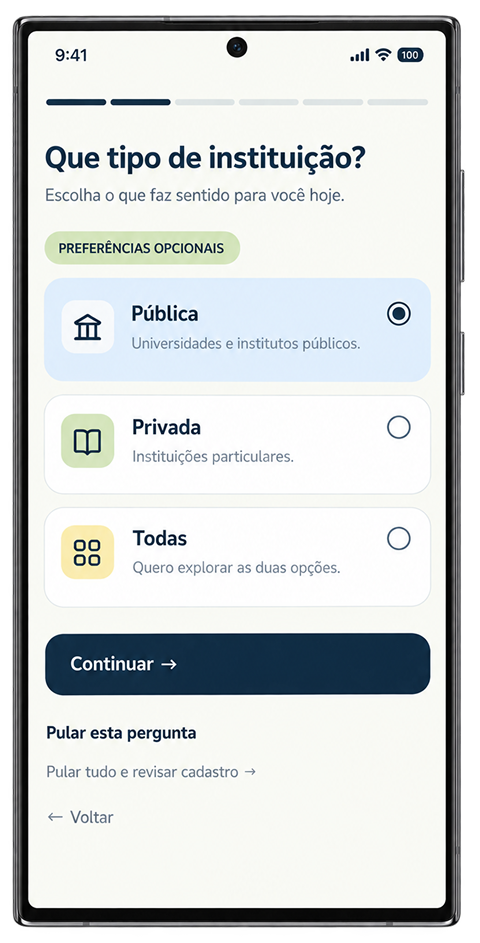
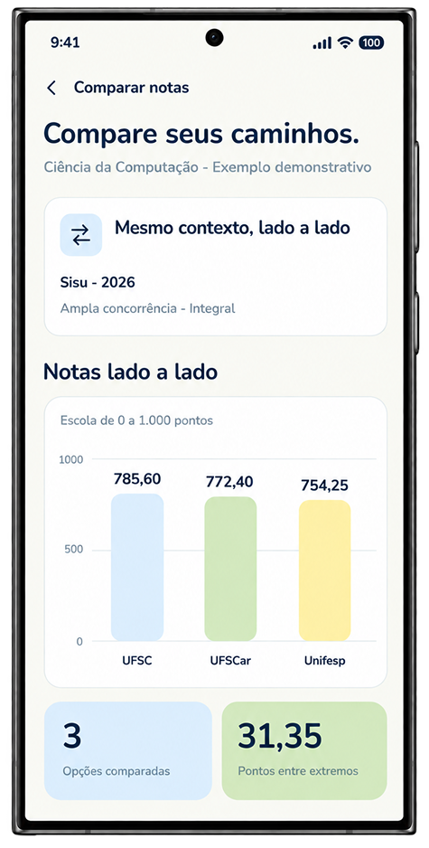
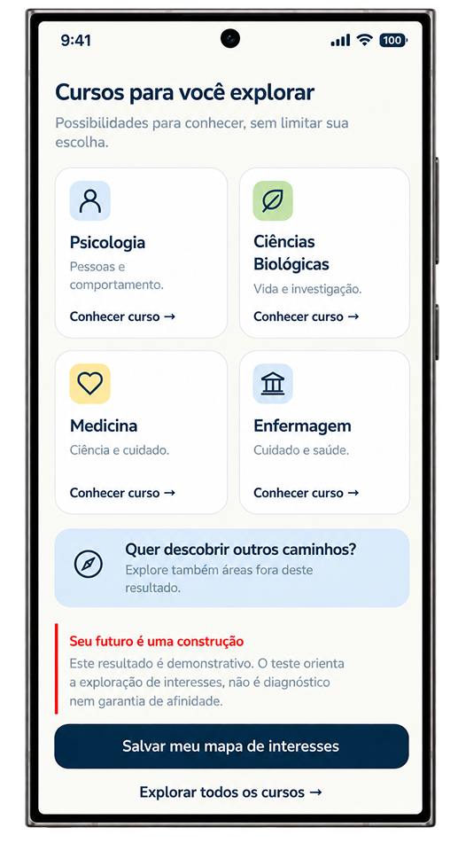

Grandes futuros começam
com pequenas descobertas.
Explore possibilidades, conheça seus interesses e organize o caminho até a universidade com mais clareza e confiança.
Começar minha jornadaSeu caminho, no seu ritmo.
Três momentos conectados para transformar perguntas em possibilidades.
Primeiro, descubra
o que te move.
Responda à nossa pesquisa inicial para conhecer seu perfil, mais adiante não deixe de fazer nosso teste vocacional, reconheça afinidades e explore áreas que despertam sua curiosidade.
Sem pressão e sem respostas certas.

Depois, conheça
suas possibilidades.
Pesquise instituições, descubra cursos, compare informações e salve suas escolhas favoritas.
Todas as possibilidades em um só lugar.

Por fim, transforme
ideias em planos.
Acompanhe datas importantes, organize suas inscrições e encontre apoio para a próxima etapa.
O próximo passo fica mais fácil de visualizar.

Tudo fica mais simples quando faz sentido.
Não precisa saber tudo para começar.
O primeiro passo é descobrir que existem muitos caminhos.
Conhecer o Tô Dentro!Acreditamos que todo futuro
merece uma oportunidade.
O Tô Dentro! nasceu para aproximar estudantes da informação, da universidade e de novas possibilidades.
Três princípios, um mesmo propósito.
Não existe um único caminho certo.
Existe o caminho que faz sentido para você.
Informar sem impor. Orientar sem limitar. Acolher cada trajetória.